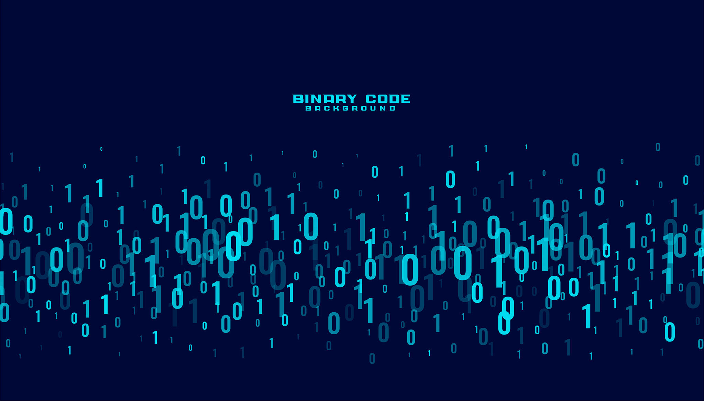
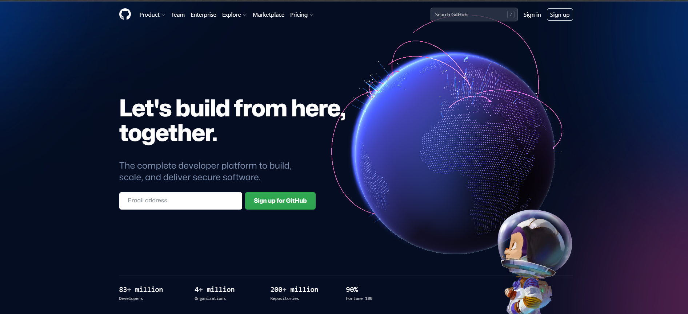
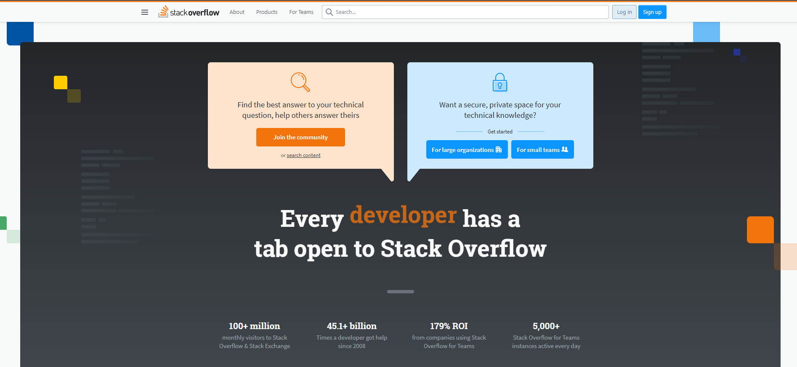
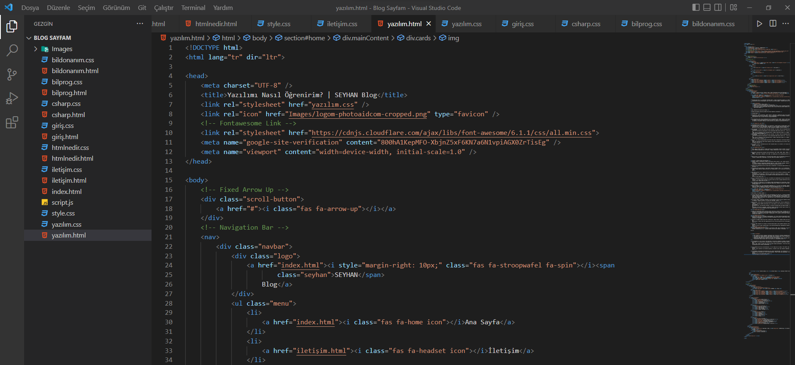
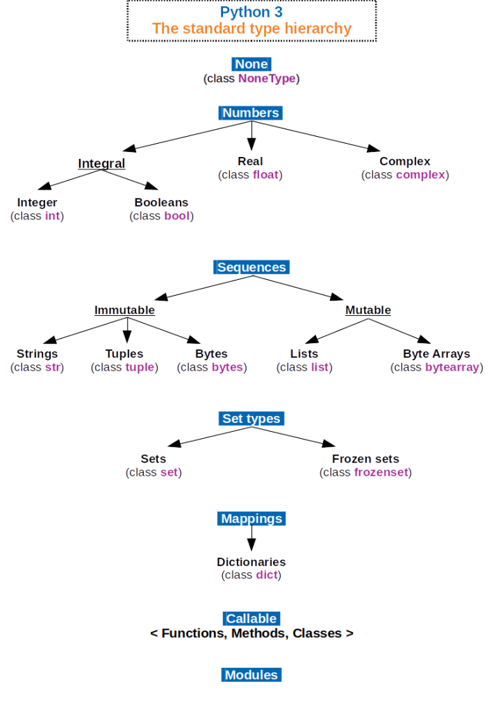
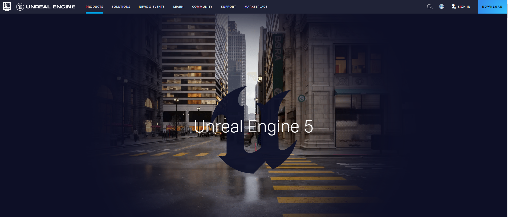

Yazılım Öğrenmek İstiyorum: Nereden, Nasıl, Hangi Programlama Diliyle Başlamalıyım?
Günümüzde gençlerin çoğu internette “Yazılım nedir?”, “Nasıl programlama yapılır?” ve “Hangi programlama diliyle başlamalıyım?” gibi sorularla araştırma yapıyor. Yazılım sektörüne olan ilgi;
- Freelance çalışma imkanı sunması.
- Sadece bir diz üstü bilgisayar ile çalışılabilmesi.
- Kendini geliştirebilen programcıların projesine göre yüksek paralar kazanmaya başlamaları.
- Uluslararası farklı sektörlerden projelere dahil olarak farkı ese caseleri görmek ve kendini geliştirme imkanı
gibi nedenlerle her geçen gün artıyor.
Nereden başlanmalı konusuna girmeden önce bazı tanımları inceleyelim.
Yazılım Nedir?
Bilgisayarlar, akıllı telefonlar, tıbbi cihazlar, fabrikalar, otomobiller gibi birçok alandaki cihazlara belirli işlevler kazandıran, çeşitli programlama dilleri veya kodlama sistemleriyle kurgulanabilen komut ve kodlar dizisine yazılım denmektedir.
Bir bilgisayara aynı işlevi kazandıracak birçok programlama dili vardır. Yıllar içinde insanlar tarafından çeşitli programlama dilleri geliştirilmiştir. Benzer işleri yapmalarının rağmen, sağladıkları kolaylıklar nedeniyle farklı alanlarda kullanılacak şekilde gelişmişlerdir.

Programlama Dilleri Nelerdir?
Programlama dilleri insanların mantığı ile makinelerin çalışma mantığı arasında köprü oluşturan uygulamalardır. Bu aracı uygulamalar, makineler ve insan arasında iletişim kurmaya yarar ve ister geliştirici ister kullanıcı olalım her zaman programlar yardımıyla iletişim kurarız.
İlk bilgisayar üretildiğinde bugün bildiğimiz halinden çok uzaktı, hatta bu bilgisayarlarda programlama 1 ve 0 lar kullanılarak uygulanıyordu. Buna programlama demek belki yanlış olur, çünkü sistem “VAR” ve “YOK” üzerine çalışıyordu. Eski bilgisayarlarda 1 ifadesi elektriksel akım var, 0 ifadesi ise elektriksel akım yok demektir.
İlk bilgisayar üretildiğinde bugün bildiğimiz halinden çok uzaktı, hatta bu bilgisayarlarda programlama 1 ve 0 lar kullanılarak uygulanıyordu. Buna programlama demek belki yanlış olur, çünkü sistem “VAR” ve “YOK” üzerine çalışıyordu. Eski bilgisayarlarda 1 ifadesi elektriksel akım var, 0 ifadesi ise elektriksel akım yok demektir.
Bu 0 ve 1 ler yoluyla bilgisayardaki devrelerde bazı basit fonksiyonlar oluşturmak mümkündü. Tabi bugün bildiğimiz bilgisayarlara göre hayal kırıklığı olarak ifade edebileceğimiz bu durum o devirde çağ atlamakla eşdeğerdi.
Bu sistemde program çalıştırmak ayrı bir dert oluyordu bunun için üzerinde 1 ve 0 ların olduğu delikli kartlar oluşturuldu.
Binary (İkili Sistem) denen bu sistem uzunca bir süre kullanıldı. Binary sistemin çevirisini yapmak üzere FORTRAN programlama dili keşfedildi. (FORmula TRANslation) formül çevirisi anlamına geliyordu.
Sonrasında bilgisayarların donanım olarak gelişmesiyle LISP, ALGOL, COBOL, BASIC, PASCAL, C, C++, PEARL, PYTHON, VISUAL BASIC, JAVASCRIPT, PHP, RUBY, C#, GOLANG gibi birçok programlama dilleri oluşturuldu.
Komut dizileri ve algoritmaları az çok birbirleriyle benzer olan bu programlama dillerini de kullanım alanına ve amacına göre sınıflamak ve ona göre hedef belirlemekte fayda var.
Yazılım Öğrenmeye Nereden Başlamalıyım?
Yazılım, kodlama, programlama öğrenmek istiyorsanız uykusuz geceler, uzun çalışma saatleri ve zihinsel ve fiziksel yorgunluğa hazırlıklı olmanızda fayda var. Şimdi isterseniz yazılım, kodlama veya programlama öğrenmeye nereden başlanır konularının detaylarına girelim.
Yazılım veya programlama dillerini daha kolay öğrenebilmek için öncelikle İngilizcenizin iyi olması gerekiyor.
Programlama dillerinde komutlar, algoritmalar İngilizce tabanlı olduğu için ve kaynakların çoğunun yabancı olması nedeniyle yabancı dilinizin iyi olması gerekir, eğer iyi değilse eğitim almanızda fayda var.
Tabi kesin gerekli değil, yabancı diliniz iyi değilse bir diğer yöntem ise komutları, yazım şekillerini ve işlevlerini ezberlemenizdir. Ezberiniz iyiyse yeterli tekrarla bu eksikliği ortadan kaldırabilirsiniz. İngilizceniz iyi ise komutu ilk defa duyduğunuzda bile az çok işlevi konusunda size mantık yürütme imkanı sunar.
Hiç bir programlama deneyiminiz yok ise, bu sektörde yer edinebilmenin tek yolu tutku derecesinde merak olacaktır. Bu alanda bitmek bilmeyen bir meraka sahip değilseniz yazılım sektöründe ilerlemek veya vasatın üstüne çıkmak mümkün değildir.
Eğer merakım var, tutkum da var ve öğrenmeye nereden başlamalıyım diye soruyorsanız, öncelikle basit düzeyde programlamanın mantığını kavrayabilmek adına basit kodlama eğitimlerini takip ederek işe başlamalısınız.
Kodlama hakkında hiçbir şey bilmiyorsanız Codemonkey bu iş için güzel bir başlangıç olabilir. Ayrıca Google bir Doodle yardımıyla kodlamanın mantığını kavrayabileceğiniz bir oyun paylaşmıştı, bu oyunla bilgisayara bir şey yaptırmanın mantığını, eğlenerek kavrayabilirsiniz.
Code Monkey ile kodlama yapmak.
Türkiye Cumhuriyeti Devleti’nin geçtiğimiz yıl başlattığı bir proje var. “1 Milyon İstihdam” adlı bu projede ücretsiz yazılım eğitimleri veriliyor. BTK Akademi adlı web sitesine E-Devlet şifrenizle kayıt olup kendinize hesap oluşturun. Bu adreste birçok alanda gönüllü profesyoneller tarafından oluşturulan video eğitim setleri var hedeflediğiniz eğitim setlerine kayıt olarak kendinizi geliştirmeniz mümkün.
Bu projenin hedefi ülkemizdeki yazılımcı açığını gidermek ve kamu veya özel sektörde istihdam sağlamaktır. Yazılım eğitimleri için güzel bir başlangıç olabilir.
Bunun yanında ücretli bazı eğitim platformlarını tercih edebilirsiniz. Belirli dönemlerde yüksek oranda indirimler uygulayan UDEMY platformunda yerli veya yabancı eğitim setlerini seçip kendinizi geliştirmeye başlayabilirsiniz. Bu platformun avantajı, eğitimcinin durumuna göre değişmekle beraber, herhangi bir problemde size destek sağlamasıdır. İnteraktif yapısı sayesinde eğitimle ilgili sorular sorup cevap alabilirsiniz ve eğitim sonunda sertifika alabiliyorsunuz.
GitHub bir programcının bilmesi gerekip sürekli başvuracağı olmazsa olmaz çok önemli bir platformdur. GitHub’da birçok programcı, birçok programlama diliyle ilgili işinizi kolaylaştırılacak kodlar, kitaplar ve kütüphaneler paylaşmaktadır. Takıldığınız birçok konuda bu platformdan bilgiye ulaşabilmeniz mümkün.
StackoverFlow yine birçok bilgisayar programcısının, soru cevap şeklinde bilgilendirme yaptıkları web tabanlı bir platformdur. Bu platformu kullanmak yaşadığınız sorunları çözerken hayat kurtarıcı ve yönlendirici olacaktır.
Öncelikle ne yapmak istediğinize karar vermelisiniz. Hangi alanda çalışmak istediğinizi belirleyin. Web geliştiricisi, Android veya iOS uygulama geliştiricisi veya oyun geliştiricisi olacağınıza karar verin.
Ancak bu kadar komplike bir dünyaya bu şekilde dalmak kısmen yüzme bilmeden okyanusun ortasına dalmaya benzer. Bu işten soğumak istemiyorsanız eğitim platformlarında basit uygulamalarla kendinizi deneyin.
Youtube platformunda yine birçok ücretsiz eğitim mevcut, HTML, CSS ve JavaScript için bir örneğine buradan ulaşabilirsiniz. Bu üç kodlama sistemi birbirleriyle kombine çalışmalıdır.
Örneğin;- HTML (HyperText Markup Language) kodlamasıyla web sitesine bir “Button” ekleyebilirsiniz.
- Bu “Button” un şeklini boyutunu veya rengini CSS ( Cascading Style Sheets) Basamaklanmış Stil Katmanları denen kodlama dili kullanarak değiştirebilirsiniz.
- Javascript sayesinde ise bu “Button” a tek veya çift tıklanınca, nereye gidilmesi gerektiği veya bilgisayardan hangi mesajın yanıt olarak geleceğini kurgulayabilirsiniz.
Bu düzenlemeler bir web sitesini şekillendirmek ve özellikler eklemenize yardımcı olacaktır. Sayfa düzenlemek için de aynı dilleri kullanabilirsiniz. Ancak interaktif bir web sitesi oluşturacaksanız PHP, Python, Ruby, Django, Asp.NET gibi dillere de hakim olmanız gerekecektir. Front End ve Back End web tasarımcıları da bu şekilde ayrılmaktadır.
Tüm bu kodlama dillerinin düzenlenebilmesi için bir takım araçlar vardır. Text editör veya metin editörü denilen çeşitli editörler size kodları yazarken, seçenekler sunar veya otomatik tamamlama imkanı verir.
Bu uygulamalar kodlarınızı düzenleyebileceğiniz pratik uygulamalardır. Her kodlama dili için ayrı kabiliyetlerde düzenleyiciler tercih edilebilmektedir. Visual Studio Code uygulaması, ücretsiz olarak edinebileceğiniz text editörlerden biridir.
Bu şekilde eğitimleri takip edip, yaratıcılığınızı test ederek bir süre kendinize zaman verin. Bir kodlama sisteminin mantığını kısa sürede öğrenebilirsiniz ancak uzmanlaşmak için defalarca denemek ve farklı şekillerde uygulamalar yaparak gelişmeniz gerekir.
Mobil Uygulama Sektöründe Kullanılan Programlama Dilleri
Mobil uygulamalar elimizdeki telefonlarda sıklıkla kullandığımız uygulamalardır. Android, iOS veya her iki işletim sisteminde çalışan programlar hazırlamak mümkün.
Günlük hayatımızı kolaylaştıran birçok aplikasyonu (app) telefonlarımıza indirip kullanıyoruz. Güzel bir fikriniz ve projeniz varsa bu alanda geliştirici olmak isteyebilirsiniz. Şimdi isterseniz bunun için öğrenmeniz gereken programlama dilleri ve uygulama geliştirme programları hakkında bilgi verelim.
Kotlin, Java, Swift, Objective-C programlama dillerini kullanarak uygulama geliştirebilir Android Studio gibi emülatörlerle hangi cihazda nasıl çalıştığını simüle edebilirsiniz.
Kotlin açık kaynak kodlu ve nesne yönelimli bir dildir. Java ile iç içe çalışabilir, android uygulamalar için tercih edilen bir dildir.
Swift de iOS ve MacOS işletim sistemlerinde kullanılabilecek programlar geliştirilebilir, kullanımı kolay ve açık kaynak kodlu bir dildir. 2014 yılından beri kullanımdadır, Objective-C de yine iOS uygulamaları geliştirmek için kullanılmaktadır ancak son zamanlarda Swift daha çok tercih edilmektedir.
Günümüzde popüler olarak tercih edilen dillerin neler olduğu ile ilgili bilge vermeye devam edelim.
Sık Kullanılan Programlama Dilleri
PYTHON Programlama Dili
1990 yılında Hollandalı Guido Van Rossum adlı bilgisayar programcısı tarafından geliştirilen yüksek seviyeli bir programlama dilidir. Günümüzde çok popülerdir, makine öğrenmesi ve birçok alanda sıklıkla kullanılmaktadır. Modüler yapısıyla kullanıcılar tarafından kolayca kullanılan bu uygulama Youtube, Google, NASA, CERN gibi büyük organizasyonlarca da tercih edilmekte.
Python kodları kütüphaneler şeklinde yüklenerek farklı kabiliyetler kazanabilmektedir, sade dili sayesinde kolayca kullanılır ayrı bir metin editörüne ihtiyaç duymaz. Açık kaynak kodludur ve kullanıcıların geliştirdiği Framework’ler le birçok işlev kazanabilirsiniz.
MacOS, Windows, Linux işletim sistemlerine uyumlu ve etkilidir.
C++ Programlama Dili
Yine yüksek seviye bir programlama dili olan C++ aslen C programlama dilinden türemiş ve Bjarne Stroustrup tarafından 1979 yılında geliştirilmiştir ve 1983 yılında C With Classes ( C++) adını almıştır. Genel amaçlı kullanılan ve üst düzey bir programlama dili C++ birçok platformda çapraz olarak kullanılabilir. Büyük ölçekli programlar bu dille geliştirilebilir.
Oyun Geliştirmek
Oyun geliştirmek içinde çok fazla bileşen içeren çok komplike bir olaydır. Bir oyun kurgusu için, karakter ve hikaye geliştirmek, grafiklerle görünür hale getirmek ve işletim sistemlerine ve donanımlara uyumlu hale getirecek birçok detayla uğraşmayı gerektirir. Bu olay da genelde ekipler halinde çözülmektedir.
Nasıl ki bir film; yapımcı, senarist, kameraman, ışıkçı, yönetmen ve oyuncularıyla ekip halinde oluşturuluyorsa bir oyun da böyle bir ekip çalışmasını gerektirir.
Grafiklerin oluşturulması bile bir sanat direktörlüğü tarafından denetlenmelidir.
Unreal Engine, Unity gibi oyun motorlarını kullanarak basit oyunlar geliştirmek ve kodlamak mümkün.
Siz de burada verdiğimiz bilgilere bakarak kendinize bir gelişim planı ve hedefi belirleyin. Eğitim programlarını inceleyerek konu hakkında fikir sahibi olmak için ücretsiz videoları izlemeden bir karar vermeyin. Başarılar.
- YouTube videosu için Selman Kahya kanalına teşekkür ederiz.
Yorumlar